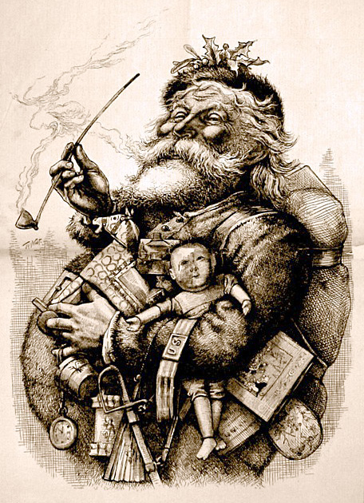

Santa Claus, also known as Father Christmas, Saint Nicholas, Saint Nick, Kris Kringle, or simply Santa, is a legendary[1] character originating in Western Christian culture who is said to bring gifts to the homes of well-behaved children on the night of Christmas Eve (24 December) or during the early morning hours of Christmas Day (25 December)[2] and coal to naughty kids. The modern character of Santa Claus was based on traditions surrounding the historical Saint Nicholas (a fourth-century Greek bishop and gift-giver of Myra), the British figure of Father Christmas, and the Dutch figure of Sinterklaas (himself also based on Saint Nicholas). Some maintain Santa Claus also absorbed elements of the Germanic deity Wodan, who was associated with the pagan midwinter event of Yule and led the Wild Hunt, a ghostly procession through the sky.
Santa Claus is generally depicted as a portly, jolly, white-bearded man—sometimes with spectacles—wearing a red coat with white fur collar and cuffs, white-fur-cuffed red trousers, red hat with white fur, and black leather belt and boots and carrying a bag full of gifts for children. This image became popular in the United States and Canada in the 19th century due to the significant influence of the 1823 poem "A Visit from St. Nicholas." Caricaturist and political cartoonist Thomas Nast also played a role in the creation of Santa's image.[3][4][5] This image has been maintained and reinforced through song, radio, television, children's books, films, and advertising.
In modern folklore, Santa Claus is said to make lists of children throughout the world. He categorizes them according to their behavior. He then sets out to deliver presents, including toys and candy, to all of the well-behaved children in the world. Misbehaving children receive coal on the night of Christmas Eve. Santa Claus is said to accomplish this feat with the aid of his elves, who make the toys in his workshop at the North Pole. Santa Claus's flying reindeer are also said to provide assistance with pulling his sleigh.[6][7] He is commonly portrayed as living at the North Pole, and laughing in a way that sounds like "ho ho ho".
Saint Nicholas of Myra was a 4th-century Greek Christian bishop of Myra (now Demre) in Lycia. Nicholas was famous for his generous gifts to the poor, in particular presenting the three impoverished daughters of a pious Christian with dowries so that they would not have to become prostitutes.[8] He was very religious from an early age and devoted his life entirely to Christianity. In continental Europe (more precisely the Netherlands, Belgium, Austria, the Czech Republic and Germany) he is usually portrayed as a bearded bishop in canonical robes.
In 1087, while the Greek Christian inhabitants of Myra were subjugated by the newly arrived Muslim Seljuq dynasty, and soon after their Greek Orthodox church had been declared to be in schism by the Catholic church (1054 AD), a group of merchants from the Italian city of Bari removed the major bones of Nicholas's skeleton from his sarcophagus in the Greek church in Myra. Over the objection of the monks of Myra the sailors took the bones of St. Nicholas to Bari, where they are now enshrined in the Basilica di San Nicola. Sailors from Bari collected just half of Nicholas' skeleton, leaving all the minor fragments in the church sarcophagus. These were later taken by Venetian sailors during the First Crusade and placed in Venice, where a church to St. Nicholas, the patron of sailors, was built on the San Nicolò al Lido. St. Nicholas' vandalized sarcophagus can still be seen in the St. Nicholas Church in Myra. This tradition was confirmed in two important scientific investigations of the relics in Bari and Venice, which revealed that the relics in the two Italian cities belong to the same skeleton. Saint Nicholas was later claimed as a patron saint of many diverse groups, from archers, sailors, and children to pawnbrokers.[8][9] He is also the patron saint of both Amsterdam and Moscow.[10]
During the Middle Ages, often on the evening before his name day of 6 December, children were bestowed gifts in his honour. This date was earlier than the original day of gifts for the children, which moved in the course of the Reformation and its opposition to the veneration of saints in many countries on 24 and 25 December. The custom of gifting to children at Christmas has been propagated by Martin Luther as an alternative to the previous very popular gift custom on St. Nicholas, to focus the interest of the children to Christ instead of the veneration of saints. Martin Luther first suggested the Christkind as the bringer of gifts. But Nicholas remained popular as gifts bearer for the people.[11][12][13]
В средние века, часто вечером перед его именинами 6 декабря, детям дарили подарки в его честь. Эта дата была раньше, чем первоначальный день подарков для детей, который был перенесен в ходе Реформации и ее противодействия почитанию святых во многих странах 24 и 25 декабря. Мартин Лютер пропагандировал обычай дарить детям подарки на Рождество в качестве альтернативы предыдущему очень популярному обычаю дарить святому Николаю, чтобы сосредоточить интерес детей ко Христу вместо почитания святых. Мартин Лютер первым предложил Христов как разносчика даров. Но Николай оставался популярным носителем подарков для людей. [11] [12] [13]
Father Christmas dates back as far as 16th century in England during the reign of Henry VIII, when he was pictured as a large man in green or scarlet robes lined with fur.[14] He typified the spirit of good cheer at Christmas, bringing peace, joy, good food and wine and revelry.[14] As England no longer kept the feast day of Saint Nicholas on 6 December, the Father Christmas celebration was moved to 25 December to coincide with Christmas Day.[14] The Victorian revival of Christmas included Father Christmas as the emblem of good cheer.[15] His physical appearance was variable,[16] with one famous image being John Leech's illustration of the "Ghost of Christmas Present" in Charles Dickens's festive classic A Christmas Carol (1843), as a great genial man in a green coat lined with fur who takes Scrooge through the bustling streets of London on the current Christmas morning, sprinkling the essence of Christmas onto the happy populace.[14][15]